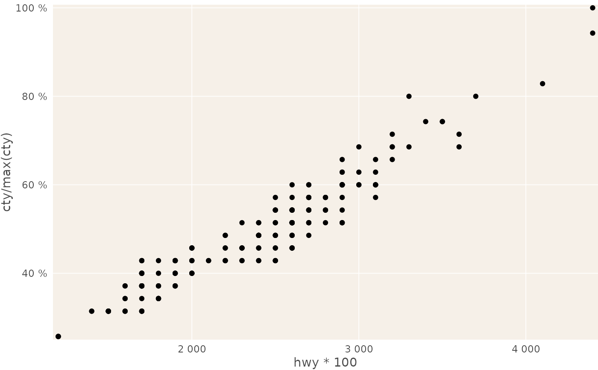

These are ggplot2::scale_x_continuous() and
ggplot2::scale_y_continuous() with Czech label defaults (decimal comma,
space as the thousands separator, " %" suffix for percentages), so you
don't have to set them repeatedly. The arguments you would normally pass to
a scales::label_*() function are available directly.
Usage
scale_x_percent_cz(
name = waiver(),
...,
labels,
limits = NULL,
expand = c(0.01, 0),
oob = scales::censor,
position = "bottom",
accuracy = 1,
scale = 100,
prefix = "",
suffix = " %",
big.mark = " ",
decimal.mark = ",",
trim = TRUE
)
scale_y_percent_cz(
name = waiver(),
...,
labels,
limits = NULL,
expand = c(0.01, 0),
oob = scales::censor,
position = "left",
accuracy = 1,
scale = 100,
prefix = "",
suffix = " %",
big.mark = " ",
decimal.mark = ",",
trim = TRUE
)
scale_x_number_cz(
name = waiver(),
...,
labels,
limits = NULL,
expand = c(0.01, 0),
oob = scales::censor,
position = "bottom",
accuracy = 1,
scale = 1,
prefix = "",
suffix = "",
big.mark = " ",
decimal.mark = ",",
trim = TRUE
)
scale_y_number_cz(
name = waiver(),
...,
labels,
limits = NULL,
expand = c(0.01, 0),
oob = scales::censor,
position = "left",
accuracy = 1,
scale = 1,
prefix = "",
suffix = "",
big.mark = " ",
decimal.mark = ",",
trim = TRUE
)Arguments
- name
The name of the scale. Used as the axis or legend title. If
waiver(), the default, the name of the scale is taken from the first mapping used for that aesthetic. IfNULL, the legend title will be omitted.- ...
Other arguments passed on to
ggplot2::scale_x_continuous()orggplot2::scale_y_continuous(), e.g.breaks,n.breaks,transformorsec.axis.- labels
Overrides the default labels built from
accuracy,scale,prefix,suffix,big.mark,decimal.markandtrim. Accepts anythingggplot2::scale_x_continuous()does, e.g.NULLfor no labels or a labelling function such aslabel_number_cz().- limits
One of:
NULLto use the default scale rangeA numeric vector of length two providing limits of the scale. Use
NAto refer to the existing minimum or maximumA function that accepts the existing (automatic) limits and returns new limits. Also accepts rlang lambda function notation. Note that setting limits on positional scales will remove data outside of the limits. If the purpose is to zoom, use the limit argument in the coordinate system (see
coord_cartesian()).
- expand
For position scales, a vector of range expansion constants used to add some padding around the data to ensure that they are placed some distance away from the axes. Use the convenience function
expansion()to generate the values for theexpandargument. The defaults are to expand the scale by 5% on each side for continuous variables, and by 0.6 units on each side for discrete variables.- oob
One of:
Function that handles limits outside of the scale limits (out of bounds). Also accepts rlang lambda function notation.
The default (
scales::censor()) replaces out of bounds values withNA.scales::squish()for squishing out of bounds values into range.scales::squish_infinite()for squishing infinite values into range.
- position
For position scales, The position of the axis.
leftorrightfor y axes,toporbottomfor x axes.- accuracy
A number to round to. Use (e.g.)
0.01to show 2 decimal places of precision. IfNULL, the default, uses a heuristic that should ensure breaks have the minimum number of digits needed to show the difference between adjacent values.Applied to rescaled data.
- scale
A scaling factor:
xwill be multiplied byscalebefore formatting. This is useful if the underlying data is very small or very large.- prefix
Additional text to display before the number. The suffix is applied to absolute value before
style_positiveandstyle_negativeare processed so thatprefix = "$"will yield (e.g.)-$1and($1).- suffix
Additional text to display after the number.
- big.mark
Character used between every 3 digits to separate thousands. The default (
NULL) retrieves the setting from the number options.- decimal.mark
The character to be used to indicate the numeric decimal point. The default (
NULL) retrieves the setting from the number options.- trim
Logical, if
FALSE, values are right-justified to a common width (seebase::format()).
Examples
library(reschola)
library(ggplot2)
ggplot(mpg, aes(hwy * 100, cty / max(cty))) +
geom_point() +
theme_schola(family = "sans", title_family = "sans", gridlines = "scatter") +
scale_y_percent_cz() +
scale_x_number_cz()
